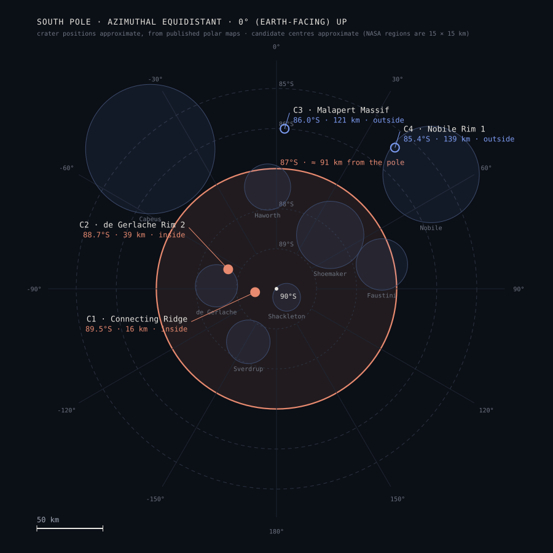
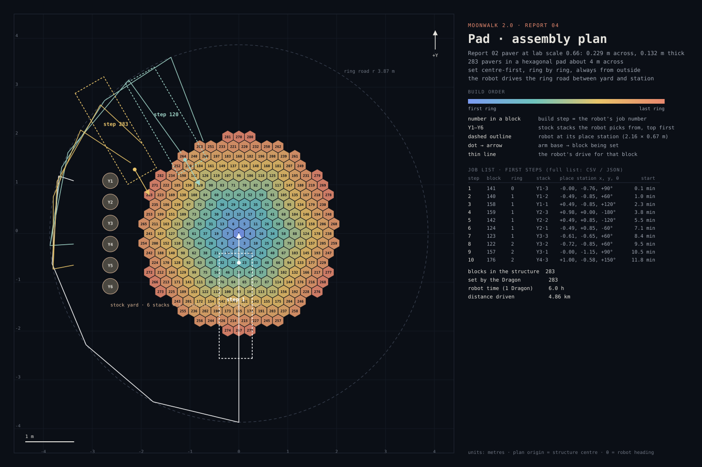
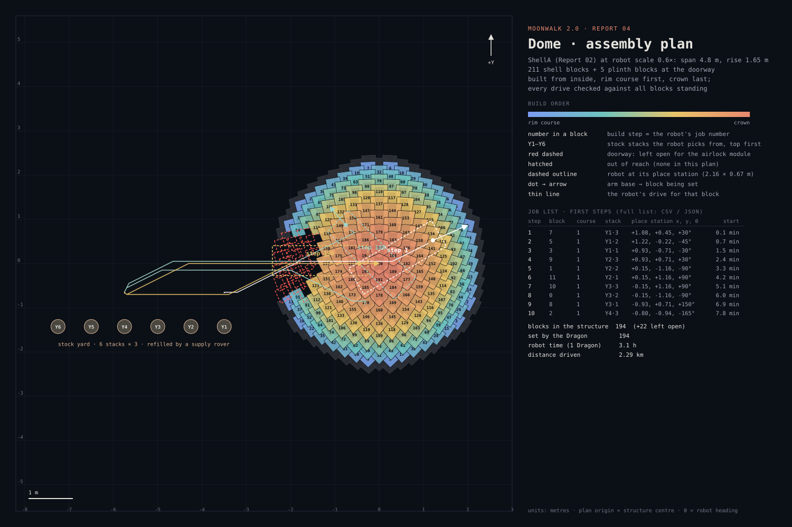
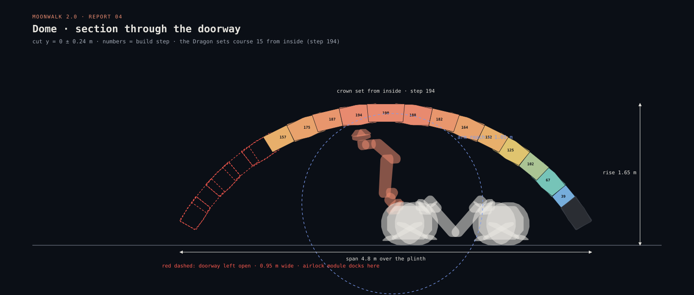
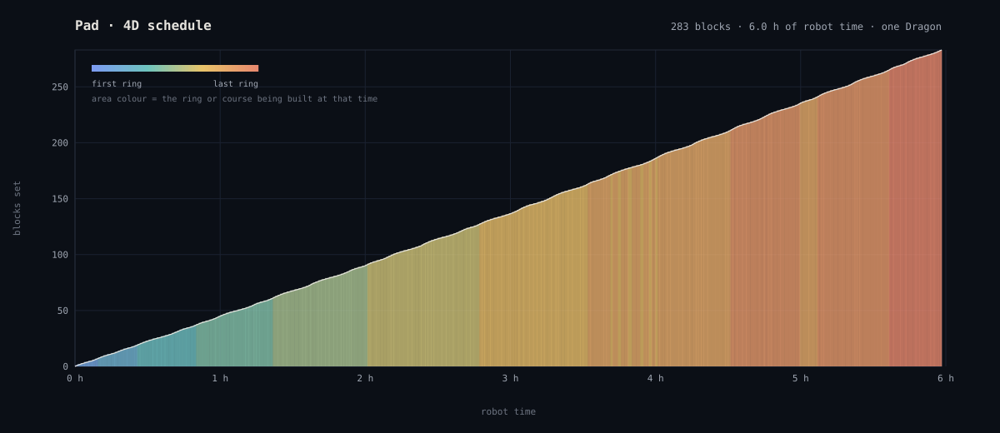
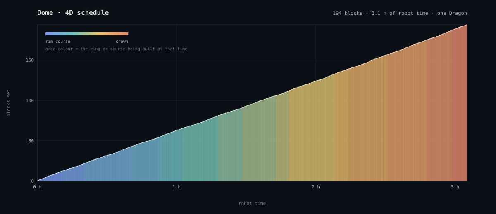

Space Robotics Lab · Tohoku University · Report 04
Moonwalk 2.0From the plan to the robot
Report 03 grew the block into structures. This report asks how they get built: where, in what order, and by which robot moves. It returns to the site, checks it against ispace’s Mission 4 landing zone, then turns the pad and the dome into assembly plans the Dragon can execute, and sets out how they are simulated.
▼ SCROLL TO THE SITE
01 · Orientation
Turning to the south pole
The Moon’s axis is tilted only about 1.5°. At the pole the Sun never climbs more than a few degrees: light arrives sideways, high ground can stay lit for most of the year, and low ground can stay dark for ever.
01 · The site
Connecting Ridge
Within 150 km of the pole the crater rims catch the low Sun while their floors never see it. Report 02 scored four NASA candidate regions; the pad and dome in this report are planned for Connecting Ridge, between Shackleton and de Gerlache: long sunlit periods, a shadowed floor within reach, and a shoulder flat enough for the pad.
LOLA is the laser altimeter on NASA’s Lunar Reconnaissance Orbiter: it measured the height of the ground, and this layer is that height as colour. Blue is low — the crater floors — and pale is high — the rims. The base site sits on Connecting Ridge, the high crest between Shackleton and de Gerlache, because at the pole height is what buys sunlight. Schematic relief here; the report version uses the LOLA 5 m polar DEM through JSMARS.
lowhigh
01 · Site data · light
Illumination, percent of the year
High ground near the pole stays lit most of the year; the best points on the Shackleton–de Gerlache crest — where the base site sits — exceed 80 %, and the longest nights there last only 3–5 days. Schematic from the basemap here; the report layer is the Mazarico average-illumination map.
0 %> 80 %
01 · Site data · cold
Diviner cold traps
Crater floors that never see the Sun stay below 110 K — cold enough to keep water ice for billions of years. The blue marks these cold traps; Shackleton’s floor, at about 90 K, is the one next door. The base site on Connecting Ridge stays up on the warm, sunlit rim beside it, close enough to haul ice from. Schematic here; the report layer is the Diviner maximum-temperature map.
< 110 Kwarm
02 · Landing zone
ispace Mission 4: the 87° line
The landing latitude given for ispace’s Mission 4 is 87° South or higher: a circle about 91 km in radius around the pole. Connecting Ridge (89.5°S) and de Gerlache Rim 2 (88.7°S) are inside it; Malapert Massif (86.0°S) and Nobile Rim 1 (85.4°S) are outside.
≥ 87°Sinsideoutside
02 · Landing zone
Do the candidate sites fall inside ispace’s Mission 4 zone?
The professor’s question: ispace has set the Mission 4 landing latitude at 87° South or higher. Drawn on the site map, that line is a circle about 182 km across around the pole. Two of the four candidate regions lie inside it, including Connecting Ridge, the base site of these reports.

South pole, azimuthal equidistant projection, 0° (the Earth-facing side) at the top. Orange: the ≥ 87°S band. Filled dots: candidates inside it; open circles: outside.
Candidate
Latitude
From the pole
≥ 87°S
C1 · Connecting Ridge base site
89.5°S
16 km
inside
C2 · de Gerlache Rim 2
88.7°S
39 km
inside
C3 · Malapert Massif
86.0°S
121 km
outside
C4 · Nobile Rim 1
85.4°S
139 km
outside
What ispace has published
Mission 4 (renumbered from Mission 6 in March 2026) is planned for 2029 on ispace’s larger ULTRA lander, about 3.6 m tall and about 1,000 kg dry. It is funded under Japan’s Space Strategy Fund, “high-precision landing technology in the lunar poles”. The aims are a landing near the south pole with an accuracy of 100 m or better (at least SLIM level) and more than 14 days of operation, using the low Sun on the lander’s sides. The public documents name the south polar region but give no latitude. The 87° figure is the one given to us, and it is drawn here as stated.
A wider region than NASA’s
NASA names 15 × 15 km regions for crewed landings. A ≥ 87°S zone is a band of about 26,000 km² around the pole. The band says where the lander may go; the 100 m accuracy is what lets it land next to a chosen pad site inside that band.
What it means for Moonwalk
Connecting Ridge and de Gerlache Rim 2 both qualify. Malapert, the best site for the Earth link, and Nobile Rim 1 do not. The pad and dome below are therefore planned for a site a Mission-4-class lander could serve. The pad sits outside the landing ellipse, and the robot’s first job is the drive from the lander to the pad site.
03 · Assembly methodology
From a list of blocks to the robot’s job list
The drawings, the animations and the tables below are one data set. A planner in Grasshopper reads the block positions from the design model, checks every pick and placement with the Dragon’s real arm, and writes the sequence the robot executes. A step toward 4D BIM: the model gains time, and its time steps are the robot’s jobs.
The rules
Every block is set next to blocks already in place, so each one is supported and the interlock is used from the first course. The robot always works from outside the laid area. On the pad it never drives over set pavers; in the dome it works from the open floor, through a doorway left open until last.
The checks
A step enters the plan only if the Dragon’s real arm, from the lab’s robot model, reaches both the pre-place and the place pose. The robot body must also fit: under the shell inside the dome, beside the stack at the stock yard. A block that fails every station is reported, not forced.
What the robot reads
Each row of the job list holds the step, block ID, ring or course, stock stack and level, the pick station and the place station (x, y, heading), the joint angles, and start and end time. The same file drives the animation, Isaac Sim, and through ROS 2 the robot.
04 · Assembly plan · pad
Pad: 283 pavers, centre out
The Report 02 paver at the lab scale of 0.66 (0.229 m across, 0.132 m thick, about 14 kg in sintered regolith), laid as a 4 m hexagonal pad. One Dragon picks each paver from a six-stack yard on the −X side, drives the ring road to a station outside the laid area, and sets the paver centre-first, ring by ring. Robot time 6.0 h; distance driven 4.9 km.

Assembly plan, plan view. Numbers are build steps, the robot’s job numbers. Dashed outlines: the robot at its place station for three example steps, with its drive for that step.
3D animation from the same plan: real Dragon kinematics, every joint angle from the job list. Drag to turn the view; Ctrl + scroll to zoom. Downloads: job list (CSV) · plan + timeline (JSON) · video (MP4)
One-minute video of the same plan: the first three pavers in detail, then the whole pad as a time-lapse.
05 · Assembly plan · dome
Dome: built from inside, through its own doorway
The Report 02 shell (ShellA, 211 tilt blocks on a 54-block plinth ring) at the size one Dragon can build: 0.6×, 4.8 m across and 1.65 m high. A doorway 0.95 m wide and 0.98 m high stays open on the stock-yard side, with a gap in the plinth. It is the opening where the airlock plug-in from Report 03 docks. The robot drives in through it for every block, sets the courses rim-first from inside holding each block by its inner face, and drives out at the end. All 194 blocks of the shell around the doorway are set; robot time 3.1 h.

Assembly plan, plan view. Course colours run from the rim (blue) to the crown (orange). Red dashed: the doorway, left open. Thin lines: the robot’s collision-free drive for three example steps.

Section through the doorway. The Dragon stands inside on the open floor and reaches the upper courses from below.
One-minute video: the first three blocks in detail, then the whole dome as a time-lapse, every drive through the doorway.
No contact with set blocks
Every pose of the robot is checked against everything standing at that moment: the plinth, every block already set, and the stock stacks. The check covers the body, the wheels, both legs, the arm and the block it carries. Drives are searched on a 5 cm, 15° grid of forward, reverse and turn-in-place moves, with every turn checked in 5° steps, so the robot only enters and leaves through the doorway. An independent check of the finished plan, frame by frame over 111,886 drive frames, finds no overlap with any block deeper than 4 cm, within the 5 cm grid. These 21 frames are mostly the first moments of backing away from a block just set.
Why 0.6× and a doorway
The Dragon is 2.2 m long and must stand under the shell. At 0.43× it fits under only the lower courses. At 0.6× it reaches the crown from inside. The doorway has to clear the robot’s height in its driving posture (0.86 m), so it cuts through the lower courses on one side: 22 blocks are left out. Closing it from outside does not work, because the deeper doorway blocks are out of reach from beyond the rim, so the opening becomes the entrance.
What is still open
The courses over the doorway span it as a short arch and need a temporary frame while they close over it. Bruun et al. (2021) used a second robot as that support. At 0.6× a block weighs 30–51 kg in sintered regolith, above the ≈ 12 kg per limb expected on the Moon: lighter, hollow blocks or two limbs per block close that gap. The arm’s own approach to each block is checked by reach, not yet for contact with neighbouring blocks.
06 · 4D BIM and robot operations
One model that is also the robot’s schedule
The usual 4D BIM links building elements to tasks on a calendar, for people to read. Here the task list is executed by a robot, so each task carries what the robot needs: which block, which stack, where to stand, which arm posture, and when. Each step in the job list is a 4D task. The animations above are those tasks played in time.

Pad: blocks set against robot time. The colour shows which ring is being laid. The slope is the build rate: about 47 pavers an hour, nearly constant, because the ring road keeps every drive about the same length.

Dome: blocks set against robot time, course by course from the rim to the crown. About 63 blocks an hour, nearly constant: every block costs one drive in through the doorway and one out.
How the plan maps onto IFC
Moonwalk plan
IFC 4 entity
Carries
block
IfcBuildingElementPart, in an IfcElementAssembly (pad, dome)
geometry, block type, mass; property set with ring or course, zone, build step
job (one row of the job list)
IfcTask + IfcTaskTime
step number, scheduled start and finish, predecessor (the previous step)
job ↔ block
IfcRelAssignsToProduct
which block a job sets
Dragon
IfcConstructionEquipmentResource
robot ID, assigned to every job (IfcRelAssignsToResource)
stock stack, station
IfcAnnotation / IfcVirtualElement with placement
pick and place poses (x, y, heading), stack and level
arm posture
property set on the task
7 joint angles at pre-place and place; full timeline in JSON beside the model
A proposed mapping, not yet exported: the planner writes CSV and JSON today. Writing the same data as IFC (for example with IfcOpenShell) lets any BIM viewer play the 4D schedule and lets the site twin record each block as planned, set, or measured.
The robot operations framework
What changes from 4D BIM
A 4D BIM schedule is usually checked by a planner and carried out by a crew who adapt on site. A robot does not adapt unless told to. So every task must already be feasible: reachable, collision-free, and with the block supported by blocks set before it (dry stacking, no mortar). The planner proves this for every step before the step enters the schedule.
Dry stacking as a rule
With no joints to hold a block, the order is part of the structure. The pad goes centre-out, so each paver interlocks with set neighbours. The dome goes course by course, so every block rests on the course below. The arch over the doorway needs a temporary support while its courses close over it. The robot never touches a set block: routes and stations are checked against everything already standing.
Closing the loop
The twin keeps three states per block: planned, set, measured. When a block is measured off its pose, or a step fails in simulation, the block goes back to planned and L2 re-plans the rest from that state. The same loop runs in Isaac Sim today and on the robot later.
07 · Simulation methodology
Grasshopper plans, Motion Stack moves, Isaac Sim checks
Each tool does the part it is best at, and the same plan files pass between them. Grasshopper plans the build, Motion Stack (the Space Robotics Lab’s ROS 2 software for the MoonBots) turns the plan into joint commands, and Isaac Sim runs those commands with physics. The measured result goes back to the design model.
1 · Plan in Grasshopper
The design model and the planner sit in one Grasshopper definition. A Python component holds the Dragon’s kinematics, taken from the lab’s robot model and checked against it to within 0.0 mm. Sliders set how many blocks to plan, which side the stock yard is on, and the playback speed. Moving the time slider shows the robot at any moment. A Bake button writes the job list and the timeline.
2 · Command through Motion Stack
Motion Stack is the open-source ROS 2 software the lab runs on the MoonBots (Neppel et al., 2025). Its joint and kinematic managers take joint targets per limb, and its orchestration swaps in a virtual robot when no hardware is attached. Next step: read timeline.json into Motion Stack, so the same commands drive the simulated Dragon and later the real one.
3 · Check in Isaac Sim
Isaac Sim runs the Dragon and the blocks with physics: grasp, contact, seating a block on its neighbours, wheels on the ground. The Isaac Sim ↔ ROS 2 link works, and the kinematic playback already moves the blocks; the robot’s own playback is still being fixed. The full physics build is the open work: the first runs tipped the robot and lost blocks from the gripper. The next round fixes the gripper contact and the robot’s balance on its wheels.
08 · Literature review
Where this work sits: BIM, robots and dry-stacked structures
Two recent reviews frame the field. Yue et al. (2025) sort BIM–robot research into task planning, assembly, printing and inspection, linked in four layers. Odugu et al. (2025) find that most systems still pass BIM to the robot one way, with little real-time feedback. Moonwalk joins three threads that are rarely combined: 4D BIM turned into robot jobs, assembly order for dry-stacked shells, and lunar construction with a modular robot.
1 · Reviews and frameworks
Yue, Wang, Zhao, Lai, Huang (2025) Interactions between BIM and robotics: towards intelligent construction engineering and management. Computers in Industry 169, 104299. doiframework · data loop
Odugu, Ghafari, Shourangiz, Khan, Wang (2025) BIM-driven robotics in construction: a systematic review of integration methods, applications and future directions. Journal of Intelligent Construction 3(4). doiintegration methods
Zhang, Luo, Xu (2022) Towards fully BIM-enabled building automation and robotics: a perspective of lifecycle information flow. Computers in Industry 135, 103570. doiBIM for robots (BIMfAR)
2 · From BIM and 4D BIM to robot tasks
Oyediran, Turner, Kim, Barrows (2025) Integration of 4D BIM and robot task planning: action-level simulation of indoor wall frame installation. ITcon 30, 352–374. doiclosest to this pipeline: 4D BIM → ROS → simulation
Kim, Peavy, Huang, Kim (2021) Development of BIM-integrated construction robot task planning and simulation system. Automation in Construction 127, 103720. doitask planning · simulation
Kim, Peavy (2022) BIM-based semantic building world modeling for robot task planning and execution. Automation in Construction 138, 104247. doiworld model from BIM
Brinkhoff, Kolani (2024) Deriving fabrication information from BIM for automated robotic task planning. 35th Forum Bauinformatik, 188–195. doiIFC → ROS · bricklaying
Karimi, Braga, Iordanova, St-Onge (2021) Semantic optimal robot navigation using building information on construction sites. ISARC 2021, 57–64. doiIFC → ROS navigation
3 · Digital twins, ROS and simulation
Wang, Yu, McGee, Menassa, Kamat (2024) Enabling BIM-driven human-robot collaborative construction workflows with closed-loop digital twins. Computers in Industry 161, 104112. doias-built written back to BIM
Liang, McGee, Menassa, Kamat (2020) Bi-directional communication bridge for state synchronization between digital twin simulations and physical construction robots. ISARC 2020. linksim ↔ robot sync
Xu, Zhu, Xu, Shao, Zhang, Zhang (2025) FEM-based real-time task planning for robotic construction simulation. Automation in Construction 170, 105935. doistability checked at every step
Richard, Kamohara, Uno, Santra, van der Meer, Olivares-Mendez, Yoshida (2024) OmniLRS: a photorealistic simulator for lunar robotics. IEEE ICRA 2024. arXivIsaac Sim lunar terrain · same lab
Neppel, Karimov, Mishra, Diaz, Gozbasi, Santra, Uno, Yoshida (2025) Designing for distributed heterogeneous modularity: software architecture and deployment of MoonBots. arXivMotion Stack · ROS 2
4 · Assembly order for dry-stacked shells and blocks
Parascho, Han, Beghini, Miki, Walker, Bruun, Adriaenssens (2020) LightVault: a design and robotic fabrication method for complex masonry structures. Advances in Architectural Geometry 2020. pdfvault built by robots, no falsework
Bruun, Pastrana, Paris, Beghini, Pizzigoni, Parascho, Adriaenssens (2021) Three cooperative robotic fabrication methods for the scaffold-free construction of a masonry arch. Automation in Construction 129, 103803. doirobots as temporary supports · fits the doorway arch
Kao, Körner, Sonntag, Nguyen, Menges, Knippers (2017) Assembly-aware design of masonry shell structures. IASS 2017. linkless falsework by design
Huang, Garrett, Ting, Parascho, Mueller (2021) Robotic additive construction of bar structures: unified sequence and motion planning. Construction Robotics. arXivorder + motion planned together
Wang, Liu, Wang, Vallat, Shi, Parascho, Kamgarpour (2025) Learning to assemble with alternative plans. ACM Transactions on Graphics 44(4). doire-planning the order online
Johns, Wermelinger, Mascaro, Hutter et al. (2023) A framework for robotic excavation and dry stone construction using on-site materials. Science Robotics 8(84). doidry stacking from local material
Nagpal, Mehr (2023) Optimal robotic assembly sequence planning (ORASP). arXivsequencing for space structures
5 · Lunar construction and ISRU blocks
Uno, Neppel, Diaz et al., Yoshida (2025) MoonBot: modular and on-demand reconfigurable robot toward Moon base construction. IEEE Transactions on Field Robotics. doithe robot of this work
Dyskin, Estrin, Pasternak, Khor, Kanel-Belov (2005) The principle of topological interlocking in extraterrestrial construction. Acta Astronautica 57(1), 10–21. doimortar-free interlocking
NASA KSC and Sidus Space Lunar landing pads: interlocking pavers (KSC-TOPS-89, US Patent 10,920,377). linkinterlocking pad pavers
Clinton, Edmunson, Effinger et al. (2022) NASA’s Moon-to-Mars Planetary Autonomous Construction Technology project. IAC 2022. NTRSpads first, robot-built
Peters, Cheung, Kostitsyna (2025) Assembly order planning for modular structures by autonomous multi-robot systems. IEEE ICRA 2025. doiassembly order · NASA ARMADAS
Imhof, Sperl, Weiss et al. (2018) Using solar sintering to build infrastructure on the Moon: RegoLight. IAC 2018. linksintered regolith blocks
The gap this work fills
BIM-to-robot work so far is mostly indoor and on Earth: walls, drywall, bricklaying, with industrial or mobile manipulators. Dry-stacked shell research plans the order and the support, but for fixed arms beside the structure. Lunar construction studies set the goals, pads first and then shelters, with little detail on how a robot sequences discrete blocks. Moonwalk combines the three for one modular robot. A 4D BIM model becomes a job list with an order that respects dry stacking, collision-free routes for a mobile robot working inside the structure it builds, and an execution and feedback path through Motion Stack and Isaac Sim.
09 · Where to present
Conferences and deadlines
Open calls after 19 October 2026, nearest first. Dates marked “est.” are estimated from the previous edition and need checking when the call is published.